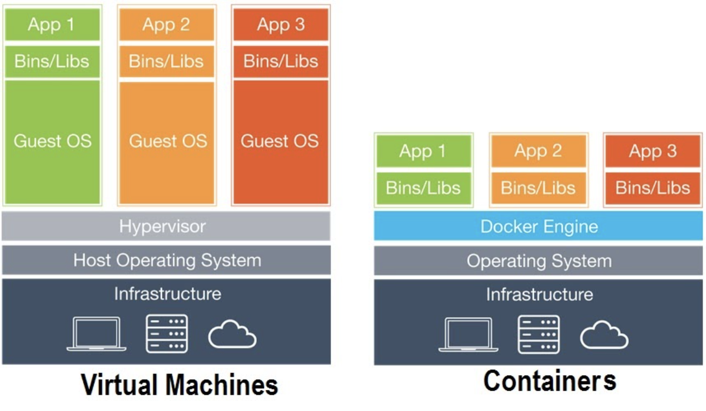

What is docker?
Before going to detail I would like to share how the logo came. It’s named after Molly dick a female sperm whale which was earlier named Moby Dick. Docker held a fundraiser in which Roderic Mast, president of The Oceanic Society – a nonprofit founded in the 1960s to protect ocean life – spoke about ocean conservation and how container ships in the ocean can harm whales.
All this is happening even though Docker and application containers have nothing to do with container ships or actual whales (other than the company’s logo being a whale). Application containers are a way to virtualize the operating system to more efficiently pack applications on to a server and more easily migrate code from various host environments.
In simpler words, Docker is an open-source tool that automates the deployment of an application inside a software container.
A simple analogy that one can give to understand what docker is, is to consider a container. Before the concept of containers, there was the issue of how to pack different items like edible and not edible items together. Since the concept of containers was developed, it reduces the use of space as well as the ease of packing of two different items.
The most common doubt that usually comes is how Virtual environments are different from Dockers. A VM acts as a guest OS on the system OS and it may use Gigabytes of the same. On the other hand, docker can act on the system os itself. In other words, docker shares the kernel. Another significant difference is that VM needs more time to boot.
There is no need for a third-party app when we are using docker and we can run the container as such it also gives a provision to run multiple versions of the same application simultaneously.
Docker gives a unified image format that helps distribute across different machines(say hosts). If docker is there no need to remember where the dependencies are and related stuff. Docker’s native platform is Linux but it can be run on mac-os as well as windows.